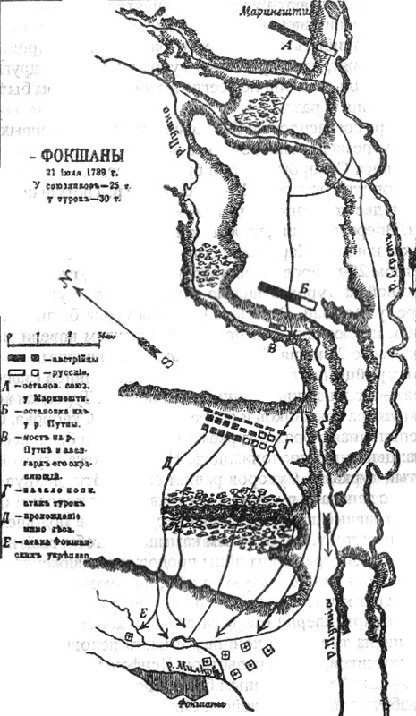
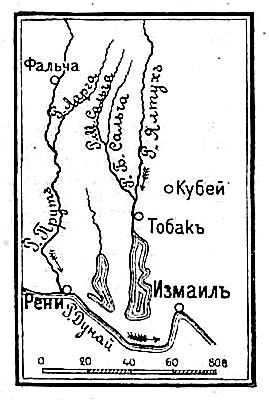
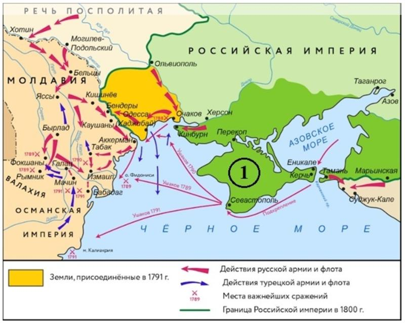
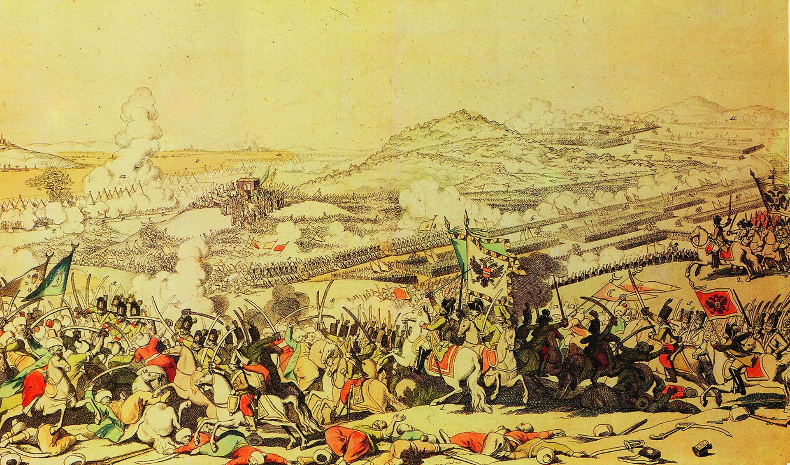
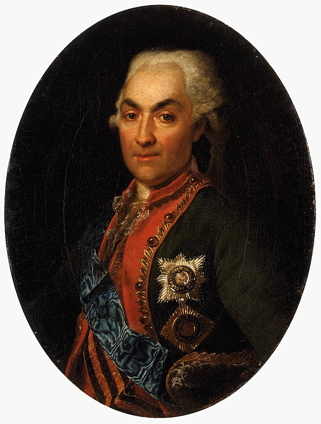

В 1789 году, когда турецкий корпус Юсуф-паши планировал разбить поодиночке австрийский корпус Кобургского и русскую дивизию Суворова, союзники объединились. Суворов, совершив стремительный марш, соединился с австрийцами, и объединённая русско-австрийская армия, под командованием Суворова, 1 августа атаковала турецкие позиции у Фокшан.


В результате ожесточенного боя, русские войска, подавив турецкую артиллерию и прорвав оборону, вынудили турок отступить. Эта победа сорвала планы турецкого командования и обеспечила значительное преимущество союзным силам.
Сражение у Сальчи, также известное как сражение у Малой Сальчи, произошло 7 сентября 1789 года в ходе русско-турецкой войны. Российская армия под командованием князя Репнина столкнулась с турецкой армией сераскира Гасана-паши у слияния рек Большая и Малая Сальчи, недалеко от Измаила. Репнин, планируя захват Измаила, атаковал армию Гасана-паши, расположившуюся по реке Сальче с целью преградить продвижение русских войск. В результате решительного сражения, русская армия одержала победу, разбив войска Гасана-паши, захватив его лагерь, 9 знамён, 3 пушки и часть обоза. Турецкие войска были вынуждены отступить к Измаилу.


Сражение при рымнике.
В сентябре 1789 года русско-австрийские войска под командованием Александра Суворова и принца Кобургского столкнулись с превосходящими силами турецкой армии у реки Рымник.
Турецкое войско, насчитывавшее около 100 тысяч человек, располагалось в укреплённом лагере, готовом к обороне. Союзные силы, численностью около 25 тысяч человек, несмотря на меньшинство, были решительно настроены на атаку.


Суворов, выбрав тактику стремительной атаки, в ходе которой союзные войска преодолели укрепления турецкого лагеря и рассеяли их армию. Несмотря на численное превосходство противника, турки были разгромлены, понеся тяжелые потери.
Победа при Рымнике стала одним из самых значительных успехов русской армии в русско-турецкой войне, укрепив позиции России в регионе и обеспечив Суворову звание графа Рымникского.
